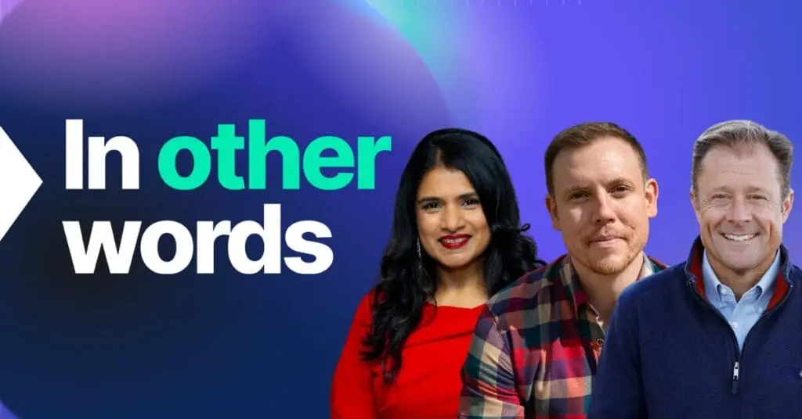

Definition
Financial pages are easy to over-claim. The useful page states who operates the product, where that statement applies, and what the product does not do. Translation must not widen the scope or rename the entity. GEO here is generative engine optimization: a reader, or a system summarizing your site, should be able to find that sentence. It is not geographic SEO, and it is not a promise of citation.
Short answer
A fintech localization strategy earns trust when each language names the same legal entity, the same license or operating scope, and the same product limit. A warmer adjective without those facts is not a trust page.

Fields that must say the same thing
Align company name, product name, specification or fee condition, application, and the claim’s constraint. If a market needs an extra disclosure, add that disclosure in that language without deleting the shared limit. Question coverage for “who is the contracting entity?” is answered only when the sentence is on the page.
The issue on the page
Do not imply a license you have not stated. Do not invent customer banks, award seals, or usage numbers to make the page look established. Evidence is the statement you can point to, such as a named legal entity and a document identifier, linked in that language.
Signals that travel with the page
Canonical URLs should be the pages you mean to index. Hreflang relates the language versions and does not choose a market ranking. A subdirectory such as /zh/ is a path, not a trust signal by itself.
Trust on a fintech page is a named entity plus a limit, not a tone of voice. Mika Visibility keeps one set of company, product, specification, and application facts in every language you publish, while the market’s own questions need real depth. English stays at the root. Chinese stays under /zh/. Do not add an /en/ prefix. Hreflang uses en, zh-Hans, and x-default pointing at the English URL. A health finding never becomes a growth score.
What to check
- Name the legal entity in each language version.
- State the scope and the exclusion next to the product claim.
- Refuse invented customer logos, awards, and usage counts.
- Keep hreflang on the canonical URLs only.
What this does not claim
Clearer fintech facts do not guarantee search rankings or AI citations. Mika does not promise regulatory outcomes or answer-surface placement.
A practical example
Teaching example, not a client. An English page says the wallet feature is offered by a named entity and excludes a named transaction type. The other language translates “trusted payments” and omits the entity and the exclusion. The repair restores both facts in HTML and re-audits. No logo wall and no ranking is added.
FAQ
What does a fintech language page need in order to be trusted?
A fintech localization strategy earns trust when each language names the same legal entity, the same license or operating scope, and the same product limit. A warmer adjective without those facts is not a trust page.
What must translation not do to a fintech scope?
Financial pages are easy to over-claim. The useful page states who operates the product, where that statement applies, and what the product does not do. Translation must not widen the scope or rename the entity. GEO here is generative engine optimization: a reader, or a system summarizing your site, should be able to find that sentence. It is not geographic SEO, and it is not a promise of citation.
Does fintech localization guarantee citations or licenses?
Clearer fintech facts do not guarantee search rankings or AI citations. Mika does not promise regulatory outcomes or answer-surface placement.
Next step
Run a structured SEO + GEO audit to see health findings, growth gaps, and a blueprint you can act on.
Clearer entities, answers, evidence, and context make pages easier to understand and reference. Results in any answer product are not guaranteed.